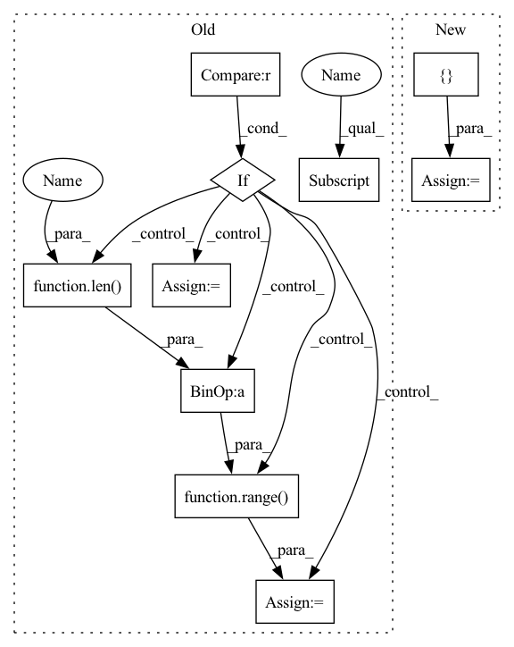

Pattern ID :36713
Before Change
if prefix_name not in ctx.parameters:
ctx.parameter_dims[prefix_name] = str_shape
if std is None and mean is None:
if ctx.dims.depth in str_shape :
del shape[str_shape.index(ctx.dims.depth)]
param = jnp.stack([orthogonal_init(ctx, shape, range(len(shape) - column_axes, len(shape)))
for _ in range(ctx.dims.sizes.depth)], str_shape.index(ctx.dims.depth))
else:
param = orthogonal_init(ctx, shape, range( len(shape ) - column_axes, len(shape)) )
param *= scale
else:
param = random.normal(ctx.prng_key, shape, ctx.model.dtype)After Change
column_axes: int = 1, scale: float = 1., post_variance_scale: float = 1,
split_dims: typing.Optional[typing.List[str]] = None) -> jnp.ndarray:
if split_dims is None:
split_dims = [ ctx.dims.depthIn pattern: SUPERPATTERN
Frequency: 3
Non-data size: 10
Instances Fragment ID: 104811615
Project Name: homebrewnlp/homebrewnlp-jax
Commit Name: c4ae09ef17c517f2facc8fd4aa91e4a7280b32f9
Time: 2022-02-13
Author: 39779310+ClashLuke@users.noreply.github.com
File Name: src/backend.py
M Class Name: AnonimousClass
N Class Name: AnonimousClass
M Method Name: get_param(9)
N Method Name: get_param(7)
M Parent Class:
N Parent Class:
M File Name: src/backend.py
N File Name: src/backend.py
M Start Line: 81
M End Line: 91
N Start Line: 102
N End Line: 113
Before Change
std: typing.Optional[float] = None, mean: typing.Optional[float] = None,
column_axes: int = 1, scale: float = 1.) -> jnp.ndarray:
prefix_name = prefixed_name(ctx, name)
shape = dims_to_shape(ctx, str_shape)
if prefix_name not in ctx.parameters:
ctx.parameter_dims[prefix_name] = str_shape
if std is None and mean is None:
if ctx.dims.depth in str_shape :
del shape[str_shape.index(ctx.dims.depth)]
param = jnp.stack([orthogonal_init(ctx, shape, range( len( shape) - column_axes, len(shape)) )
for _ in range(ctx.dims.sizes.depth)], str_shape.index(ctx.dims.depth))
else:
param = orthogonal_init(ctx, shape, range(len(shape) - column_axes, len(shape)))
param *= scale
else:
param = random.normal(ctx.prng_key, shape, ctx.model.dtype)After Change
column_axes: int = 1, scale: float = 1., post_variance_scale: float = 1,
split_dims: typing.Optional[typing.List[str]] = None) -> jnp.ndarray:
if split_dims is None:
split_dims = [ ctx.dims.depth, var = stacked_orthogonal_init(ctx, str_shape, column_axes, split_dims)
param *= scale * post_variance_scale
ctx.parameter_variance[name] = var * scale ** 2
else: Fragment ID: 104811614
Project Name: homebrewnlp/homebrewnlp-jax
Commit Name: c4ae09ef17c517f2facc8fd4aa91e4a7280b32f9
Time: 2022-02-13
Author: 39779310+ClashLuke@users.noreply.github.com
File Name: src/backend.py
M Class Name: AnonimousClass
N Class Name: AnonimousClass
M Method Name: get_param(9)
N Method Name: get_param(7)
M Parent Class:
N Parent Class:
M File Name: src/backend.py
N File Name: src/backend.py
M Start Line: 81
M End Line: 91
N Start Line: 102
N End Line: 113
Before Change
objects = line.split(", ")
if len(objects) == 2:
image = objects[0]
objects = objects[1].split("\"")
if 1 < len(objects) :
if len(objects) % 2:
captions = [objects[2 * i + 1]
for i in range( int(len( objects) / 2)) ]
else:
raise Exception("Line %s: unexpected number "
"of quotes in filename" % line)
else:
captions = objects[0].split()
else:
image = objects[0][:-1]
captions = []After Change
objects = line.split(", ")
if len(objects) == 2:
image = objects[0]
captions = []
for caption in objects[1:]:
if caption[0] != "\"" or caption[-1] != "\"":
log.warning("Line %s: unexpected number "
"of quotes" % line) Fragment ID: 104811620
Project Name: openvinotoolkit/datumaro
Commit Name: 551fa11a820347080aaa92b43cac2fe61f1691a6
Time: 2021-07-22
Author: kirill.sizov@intel.com
File Name: datumaro/plugins/icdar_format/extractor.py
M Class Name: _IcdarExtractor
N Class Name: _IcdarExtractor
M Method Name: _load_recognition_items(1)
N Method Name: _load_recognition_items(1)
M Parent Class: SourceExtractor
N Parent Class: SourceExtractor
M File Name: datumaro/plugins/icdar_format/extractor.py
N File Name: datumaro/plugins/icdar_format/extractor.py
M Start Line: 58
M End Line: 72
N Start Line: 59
N End Line: 70